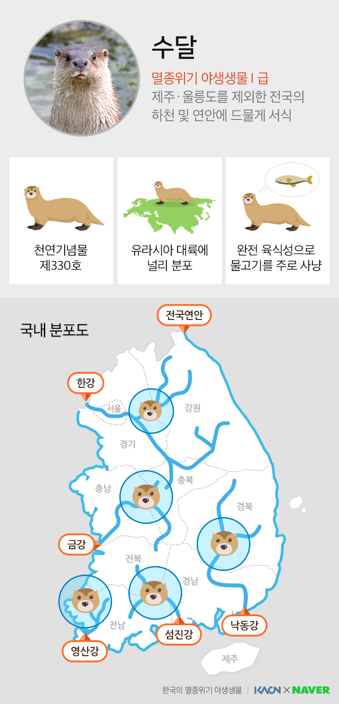
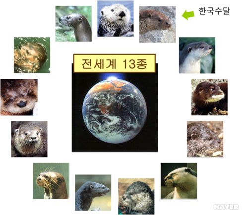
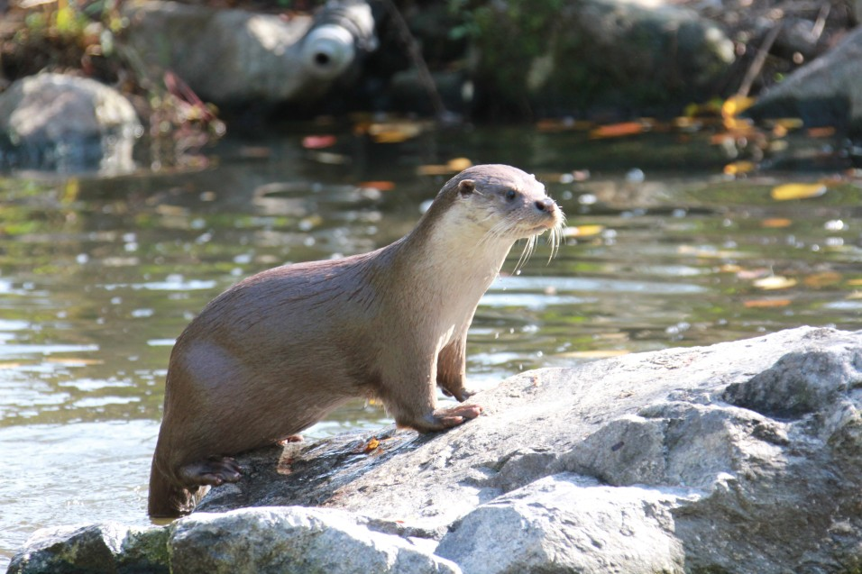
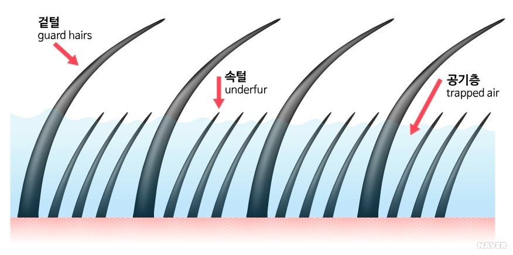
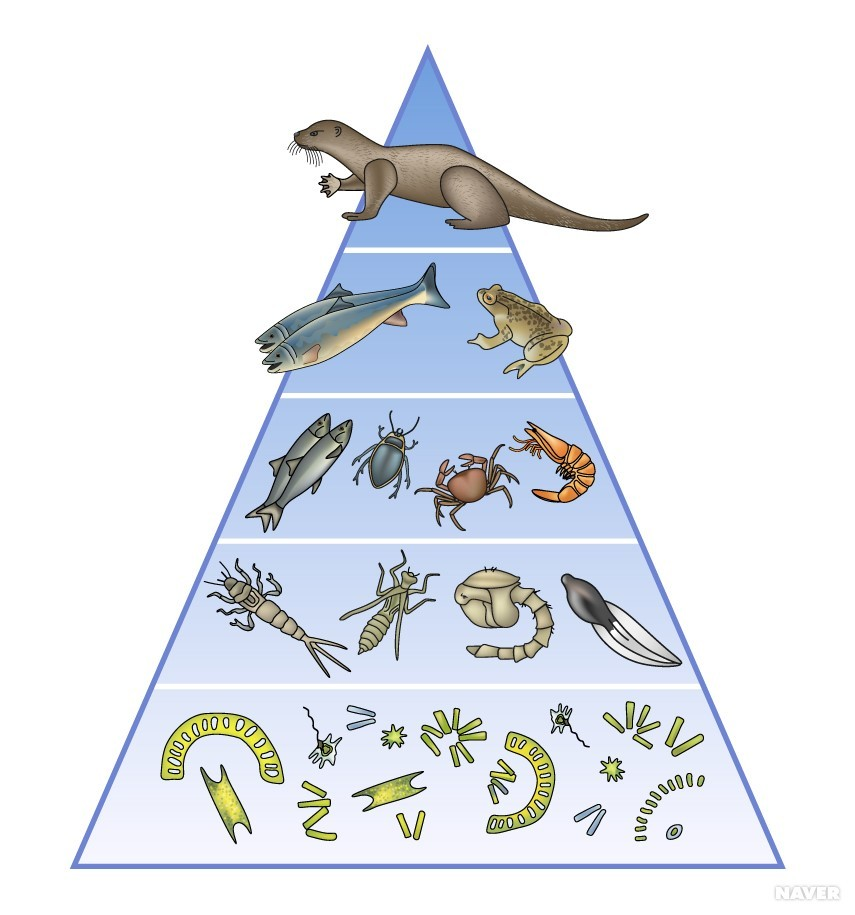
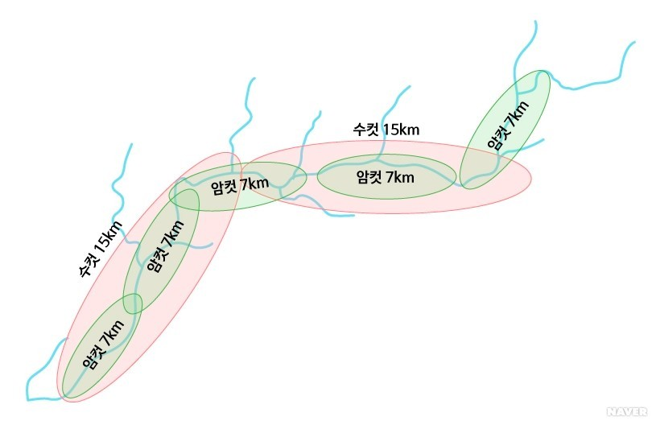

| 분류군 | 포유류 |
| 학명 | Lutra lutra |
| 생물학적 분류 | 문 : 척삭동물문(Chordata) 강 : 포유강(Mammalia) 목 : 식육목(Carnivora) 과 : 족제비과(Mustelidae) 속 : 수달속(Lutra) |
| 지위 | 환경부 멸종위기 야생생물 I급 천연기념물 한국 적색목록 취약(VU) IUCN 적색목록 준위협(NT) |

수달은 족제비, 오소리, 담비, 밍크, 스컹크 등과 같은 족제비과에 딸린 젖먹이동물(포유류)이다. 수달의 조상은 지금으로부터 약 3,000만 년 전에 지구상에 출현해 현재는 세계적으로 13종이 있다. 족제비과 중에서 수달 종류만 따로 수달아과(Lutrinae)로 묶는다. 우리나라에는 유라시아수달이(Eurasian otter)라고도 불리는 수달(Lutra lutra) 1종만 볼 수 있다. 영어 이름에서 알 수 있듯이 유라시아 대륙 전역에 광범위하게 분포하며 수달 종류를 대표하는 종이다.
귀여운 모습의 수달은 땅에서도 살지만 헤엄을 잘 쳐 수중 생활에 매우 적합하며 물속에서 최고의 물고기 사냥꾼이다. 종종 바닷가에서 사는 수달을 해달이라고 편의상 부르기도 하지만, 해달(Enhydra lutris)은 별도의 수달 종으로 북극과 가까운 베링해와 북미 태평양 연안에 분포해 우리나라에서 볼 수 없다. 현재 수달아과에 딸린 13종의 수달 대부분이 국제적으로 보호되고 있다.

수달은 몸이 매끈한 유선형이라 물속에서 전후좌우로 빠르게 회전하면서 수영할 수 있다. 몸길이는 최대 약 1,250mm이며 몸무게는 약 12kg이다. 앞발과 뒷발의 5개의 발가락 사이에 물갈퀴 있다. 털가죽은 이중구조로 방수 및 체온을 유지하는 기능이 매우 뛰어나다. 수달의 털가죽을 돋보기로 자세히 보면 바깥 털과 속털이 서로 다른 층으로 나누어져 있다. 겉털(guard hair)은 길이가 17~18mm이고 속털(underfur)은 8~9mm이다. 속털은 매우 부드럽고 가늘며 밀도가 매우 높아서 사이사이에 공기층을 만들어 추운 겨울에도 단열 효과가 매우 뛰어나다. 갈색의 바깥 털은 속털을 충분히 덮을 만큼 길게 나 있어서 수달이 잠수할 때에는 바깥털이 솜털 위로 쓰러지듯 덮이게 된다. 이 때문에 솜털의 공기층을 긴 바깥털이 덮어서 잠시나마 공기층이 유지된다.
수달의 털 밀도는 1cm2당 약 5만 개 정도로서 지구상의 모든 동물 중에서도 밀도가 가장 높은 동물에 속한다. 사람 머리털은 전체가 약 10만 개 정도이니 수달의 털가죽 밀도가 얼마나 높은지 짐작할 수 있을 것이다. 실제로 수달의 피부를 보려고 털가죽을 양손으로 세게 벌려도 빽빽하고 촘촘한 속털만 보일 뿐 속의 피부는 전혀 드러나지 않는다.
수달은 완전한 육식성 동물로서 자신이 살아가는 서식 환경 속에서 가장 쉽게 구할 수 있는 먹잇감을 사냥해 살아간다. 주로 물고기(약 80% 이상)를 잡아먹으며 그 외에 개구리, 물새, 갑각류, 곤충, 뱀, 그리고 쥐 같은 소형 포유류도 잡아먹는다. 수달은 수생태계의 최상위 포식자로서 수달이 서식하는 지역의 수환경의 건강도를 평가하는 지표종(indicator species)이다. 즉, 수달은 하천의 수생 생태계의 먹이사슬을 균형 있게 조절해주는 핵심종(keystone species) 역할을 한다.
수달은 약 20cm 이상의 큰 물고기를 주로 사냥하는데 그래야 한 번의 사냥으로 충분히 배불리 먹을 수 있기 때문이다. 성장 속도가 빨라서 토종 물속 생물들에게 큰 위협이 되고 있는 배스나 블루길 같은 생태계 교란 외래어종은 수달에게 매우 좋은 먹잇감이 된다 실제 수달의 배설물을 분석하면 배스의 뼈가 많이 나온다. 이처럼 수달은 충분히 성장한 물고기를 주로 사냥하기 때문에 상대적으로 크기가 작은 다양한 토착 어종들을 보호하게 된다. 즉 수달은 수생태계의 생물다양성을 다양하고 건강하게 유지하는 역할을 한다.
수달의 활동 공간은 다른 포유류들과 차이가 크다. 수달은 주로 하천을 따라 살기 때문에 활동 영역이 면이 아니라 선형을 띤다. 그래서 수달의 행동반경을 나타낼 때 면적이 아니라 길이 단위로 표시하게 된다. 그래서 자칫 수달 분포도를 보면 우리나라 전역에 넓게 분포하는 것처럼 보일 수도 있지만, 실제로 우리나라의 수달 개체군의 수와 서식 밀도는 매우 낮다.

수달의 세력권은 수컷의 경우 15km, 암컷은 7km 정도로 의외로 긴 편이다. 한 마리의 수컷은 두 마리 이상의 암컷과 짝을 이루기도 해서 각각의 세력권은 일부분이 겹치기도 한다. 활동 영역이 선형이다보니 수달은 다른 육상동물들보다 서로 더 자주 충돌할 수밖에 없어서 먹잇감이 풍부한 먹이터를 놓고 치열하게 경쟁한다.